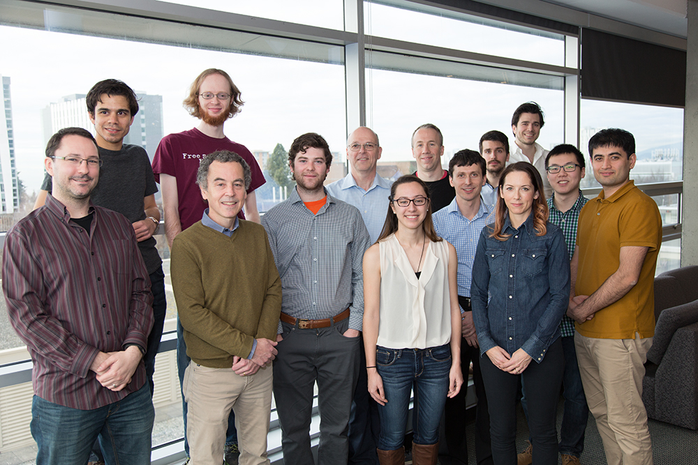
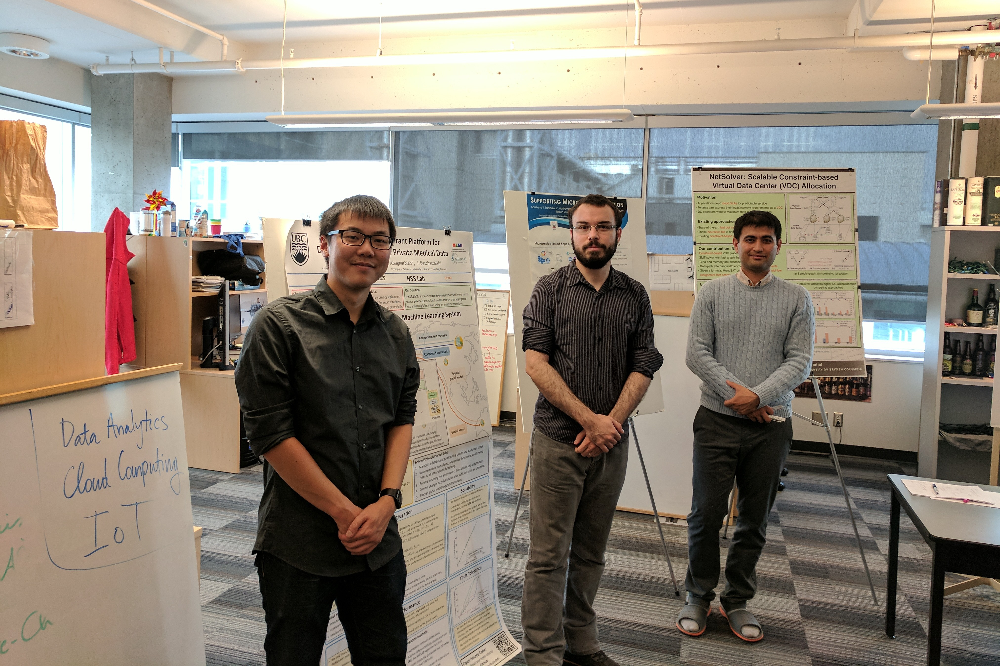
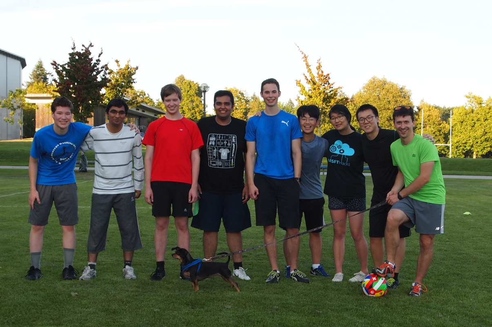
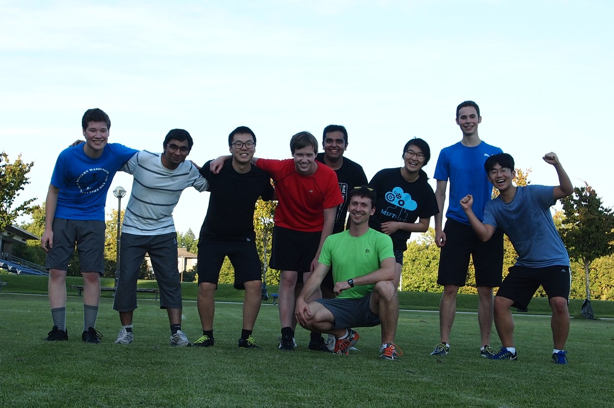
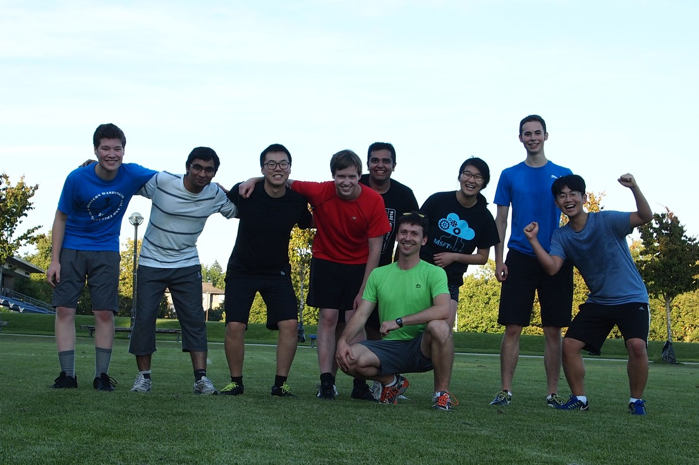
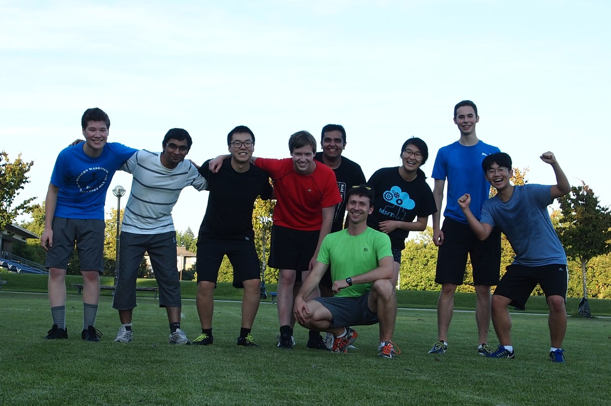

 



Networks, Systems, and Security (NSS) Lab
The NSS lab is part of the Department of Computer Science, at the University of British Columbia.
People
We are a diverse group and are always looking to recruit strong students, post-docs, and new faculty to join us.
Research
We conduct research on a variety of topics, including operating systems, distributed systems, security, and program analysis.
Publications
We have a strong track-record in publishing in top systems, networks, and security conferences and journals.